행사개요
행 사 명 : 포항시 승격 70년 포항 미래비전 포럼
주 제 : 시승격 70년! 포항의 미래 발전을 향한 새로운 도약
기 간 : 2019년 6월 5일(수) 14:00 ~ 17:20
장 소 : 포항시청 대회의실
프로그램
2019-06-11
시간
프로그램
14:00 ~ 14:30
축하공연
포항시립합창단 혼성 2중창 공연
개 회 사
이강덕 포항시장
환 영 사
김도연 포항공과대학교 총장
축 사
박명재 국회의원
김정재 국회의원
서재원 포항시의회 의장
14:30 ~ 15:00
기조강연
포항 새로운 70년 모색
권도엽 前국토해양부 장관
15:00 ~ 15:30
주제발표
지속가능한 환동해 중심도시 포항
백성기 前포항공과대학교 총장
15:30 ~ 15:45
Break
15:45 ~ 16:15
주제발표
포항, 어디로 갈 것인가?
신세돈 숙명여자대학교 교수
16:15 ~ 16:45
주제발표
포항, 21세기형 대학도시를 상상하다
박길성 고려대학교 교수, 한국사회학회장
종합토론
16:45 ~ 17:20
좌 장
김승환 포항공과대학교 박태준미래전략연구소장
토 론 자
심재윤 포항공과대학교 산학처장
이재영 한동대학교 산학협력단장
하대성 한국은행 포항본부장
김종식 포항시 환동해미래전략본부장
17:20
폐 회
2019-06-11
연사
권도엽
前국토해양부 장관
- 포항공과대학교 초빙석좌교수
- 김·장 법률사무소 고문
- 안전생활실천시민연합 공동대표
백성기
前포항공과대학교 총장
- 포항공과대학교 제5대 총장
- 교육부 대학구조개혁위원장
- 선진통일건국연합 상임대표
신세돈
숙명여자대학교 교수
- 숙명여자대학교 경제학부 교수
- 삼성경제연구소 금융연구실장
- 한국은행 조사 전문연구위원
박길성
고려대학교 교수, 한국사회학회장
- 고려대학교 사회학과 교수
- 고려대학교 부총장, 대학원장 역임
- 한국사회학회장
참석자
▷ 이강덕 포항시장, 김도연 포항공과대학교 총장, 박명재 국회의원, 서재원 포항시의회 의장, 공원식 70인 시민위원회 공동위원장
▷ 이점식 포항테크노파크 원장, 조병기 포항청년회의소 회장, 김영철 포항상고회의소 사무국장
▷ 조영원 포항시의회 건설도시위원회 부위원장, 김민정 포항시의회 의원, 정종식 포항시의회 의원, 이나겸 포항시의회 복지환경위원장
▷ 김상원 지진대책 특별위원장, 복덕규 지진대책 특별위의원
내용
종합토론 내용
이재영
한동대 산학협력단장
" 다양한 분야의 전문가들이 자유롭게 토론할 수 있는 장이 필요하다. 이러한 토론을 통해 세계가 변화되고 그에 따라 도시의 형태도 변화될 것이다. "
백성기
전 포항공과대학교 총장
" 포항의 미래를 상상이 아닌 가시적으로 보여주는 것이 필요하다. 소프트 파워 비전을 제시하자. 대학도시로 젊은이들이 오고싶은 도시, 재미있고 흥겨운 도시가 되었으면 좋겠다."
심재윤
포항공과대학교 산학처장
"대학동문 선후배들이 회사를 세웠을때 같이 사업할 인력과 기술이 대학에 있고 이는 분명히 다른지방도시하고는 다른 장점이 있다.
이를 통해 성공모델들이 나오기 시작하면 벤처에성공모델 활성화될거다."

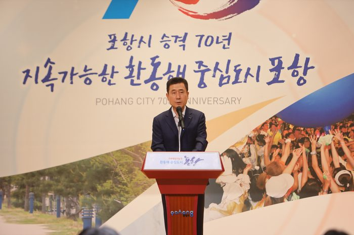
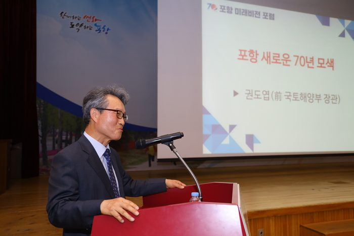
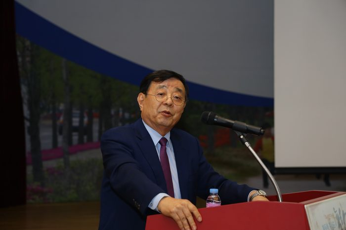
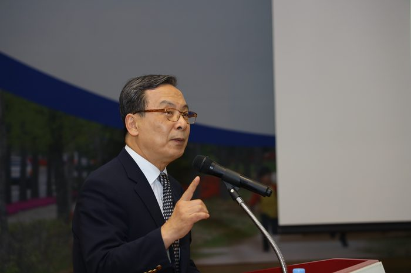
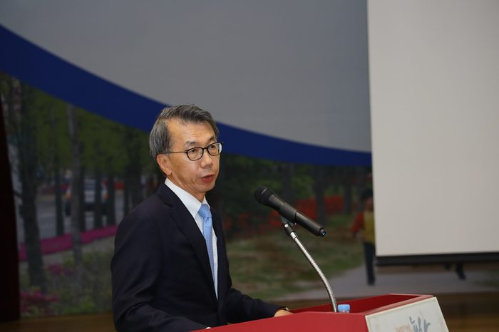
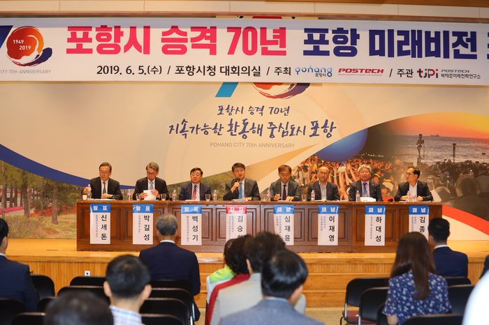
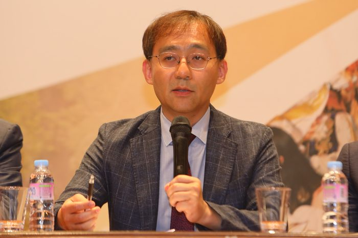
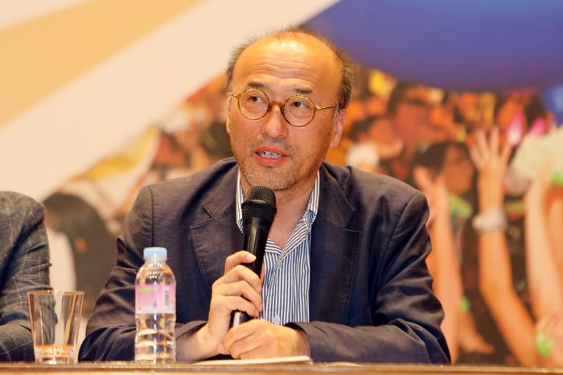
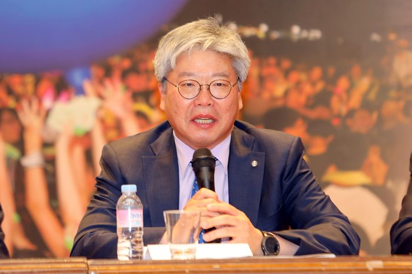
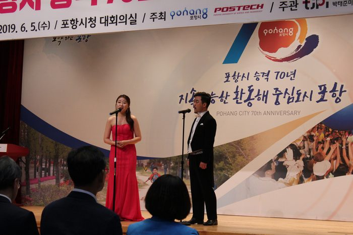
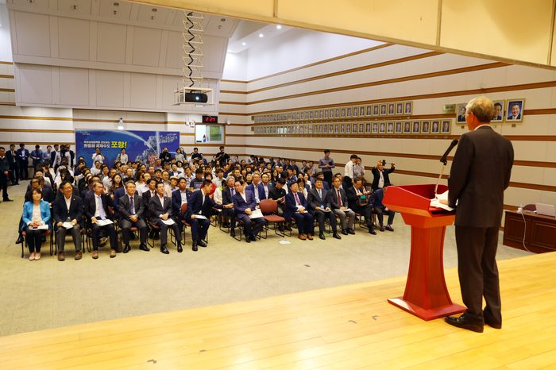